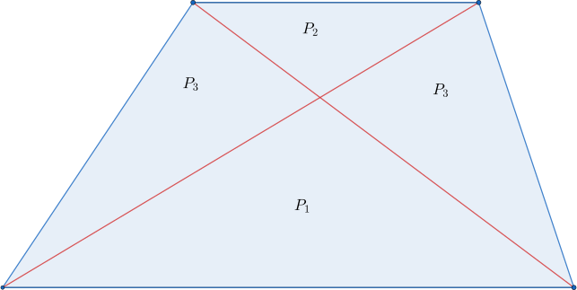
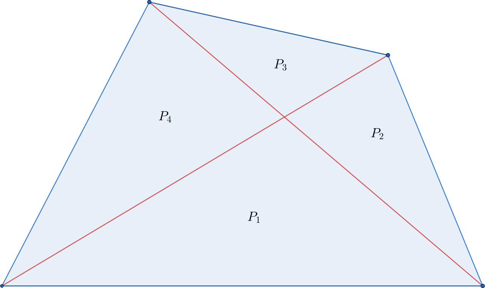
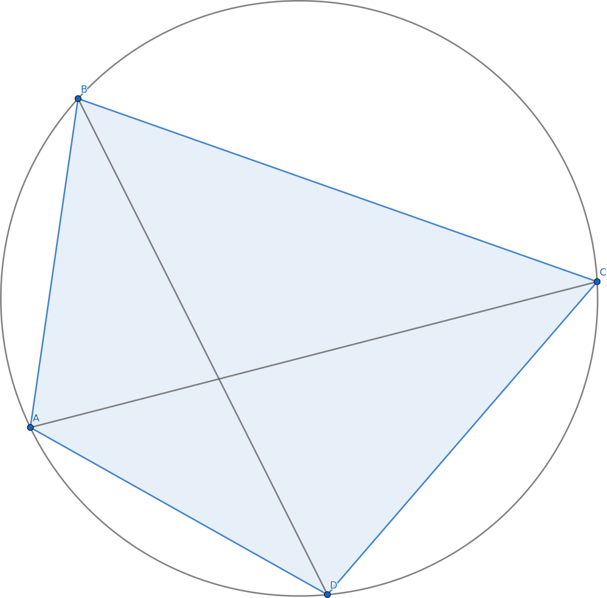
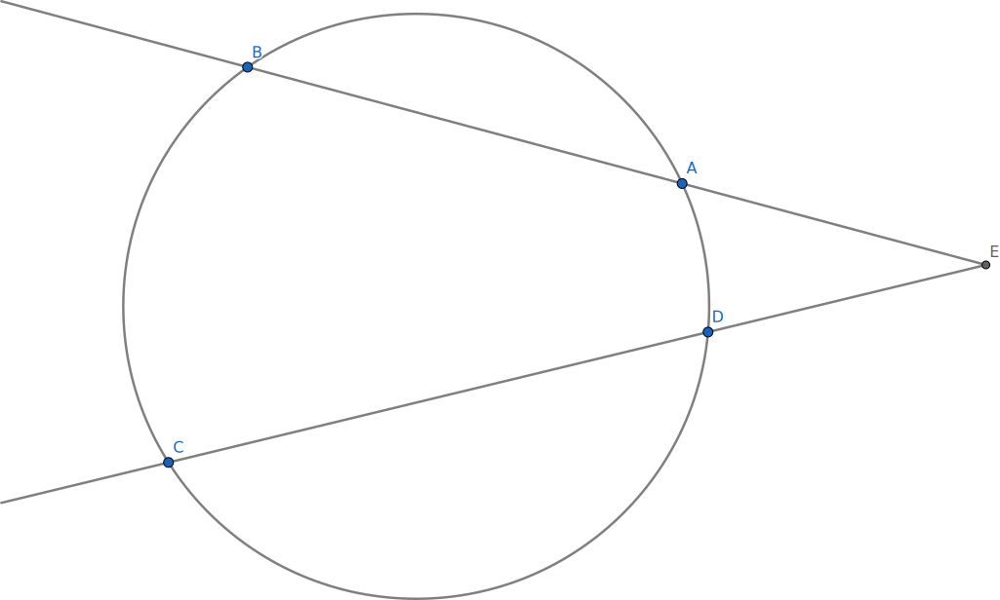
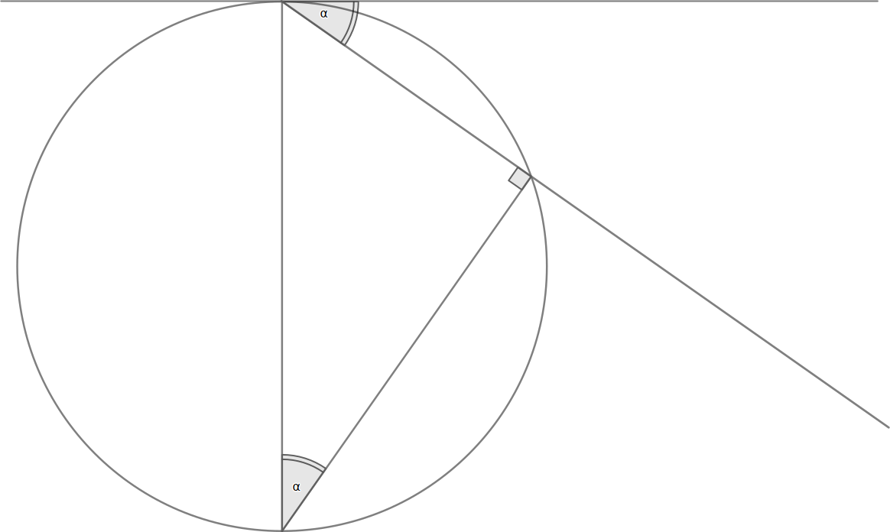
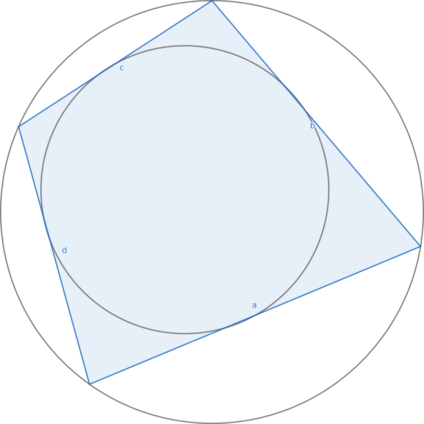
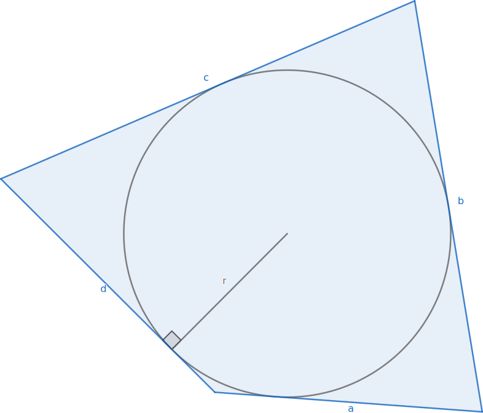
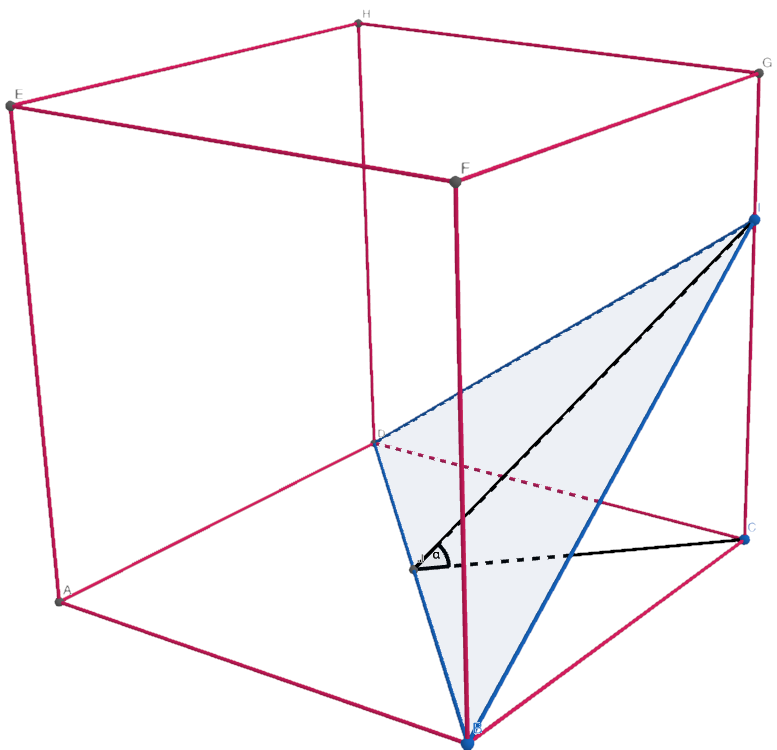
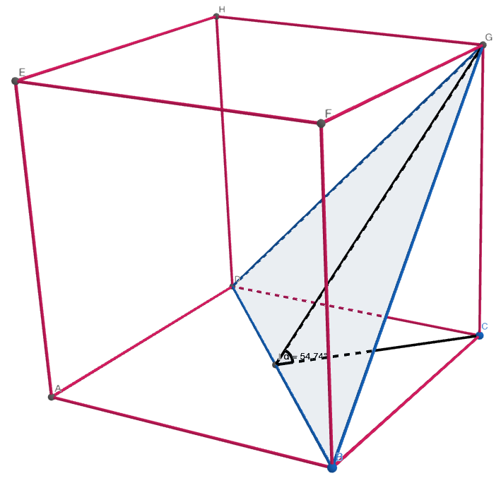
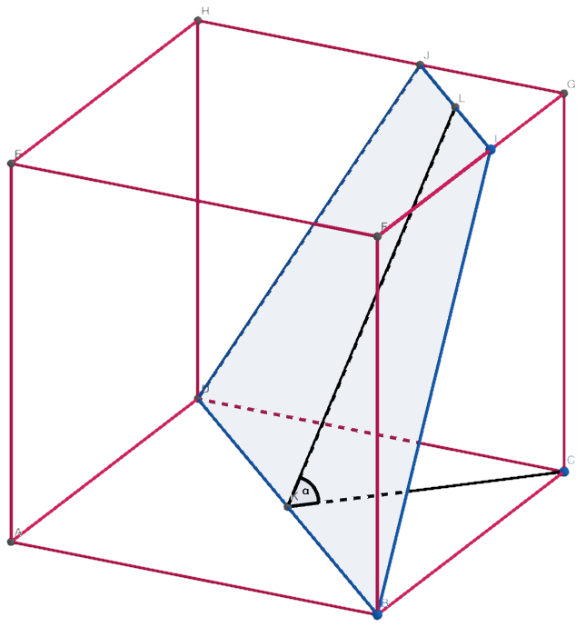

dla a1,a2,a3,...,an>0 zachodzi nierówność:
na12+a22+a32+an2≥na1+a2+...+an≥na1⋅a2⋅a3⋅...⋅an≥a11+a21+a31+...+an1n
sˊrednia kwadratowa≥sˊrednia arytmetyczna≥sˊrednia geometryczna≥sˊrednia harmoniczna
równość zachodzi wtedy, gdy a1=a2=...=an
dla K - kapitał końcowy, K0 - kapitał początkowy, p - roczna stopa procentowa, n - liczba lat lokaty, m - liczba okresów kapitalizacji, v - podatek:
K=K0⋅(1+(1−v)⋅100⋅mp)m⋅n
1 ha=10 000 m2
1 a=100 m2
1 t=1000 kg
1 l=1 dm3
Jeśli spełnione jest któreś z równań:
- ∣a∣+∣b∣+∣c∣≤0
- a2+b2+c2≤0
to a=0∧b=0∧c=0
dla n∈Z:
n⋅(n+1)1=n1−n+11
dla ax3+bx2+cx+d=0:
x1+x2+x3=−ab
x1⋅x2 + x1⋅x3 + x2⋅x3=ac
x1⋅x2⋅x3=−ad
- Wyraz wolny:
W(0)
- Suma współczynników wielomianu:
W(1)
- Suma współczynników przy potęgach nieparzystych:
2W(1)−W(−1)
- Suma współczynników przy potęgach parzystych:
2W(1)+W(−1)
dowód nie wprost: f(x1)=f(x2)⇒x1=x2
- sin x=1 + tg22x2tg2x=1 + t22t
- cos x=1 + tg22x1 − tg22x=1 + t21 − t2
- tg x=1 − tg22x2tg2x=1 − t22t

P3=P1⋅P2⇔P3⋅P3=P1⋅P2

P1⋅P3=P2⋅P4
W dowolnym czworokącie ABCD wpisanym w okrąg iloczyn długości przekątnych równy jest sumie iloczynów długości przeciwległych boków

∣AC∣⋅∣BD∣=∣AB∣⋅∣CD∣+∣BC∣⋅∣AD∣

∣AE∣⋅∣BE∣=∣DE∣⋅∣CE∣
Kąty dopisany i wpisany na tym samym łuku są równe


P=abcd

P=21⋅(a+b+c+d)⋅r
|  |
 |
 |
| tg α<2⇔α<54∘ |
tg α=2⇒α≈54∘ |
tg α>2⇔α>54∘ |
Warunek współliniowości trzech punktów na płaszczyźnie A(xA;yA), B(xB;yB), C(xC;yC):
xB−xAxC−xA=yB−yAyC−yA
Rozmiar wyjściowego zbioru: n
| . |
Rozmiar tworzonego zbioru |
Powtórzenia |
Kolejność ma znaczenie |
Wzór / Liczba możliwości |
| Permutacja bez powtórzeń |
n |
|
|
Pn=n! |
| Permutacja z powtórzeniami |
n |
(elementy powtarzają się k1,k2,...,km) |
|
Pnˉ=k1!⋅k2!⋅...⋅km!n! |
| Wariacje bez powtórzeń |
k |
|
|
Vnk=(n−k)!n! |
| Wariacje z powtórzeniami |
k |
|
|
Vnkˉ=nk |
| Kombinacje bez powtórzeń |
k |
|
|
Cnk=(kn)=k!⋅(n−k)!n! |